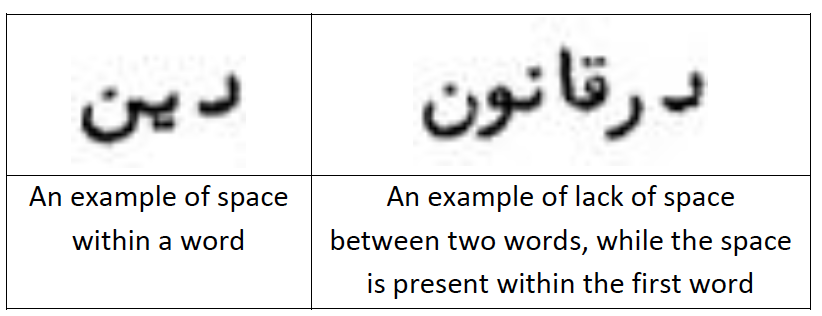
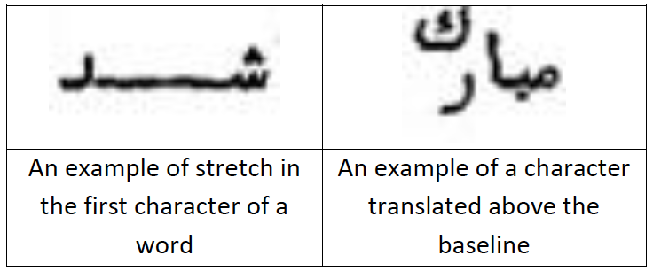
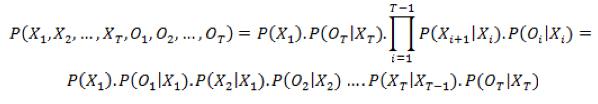
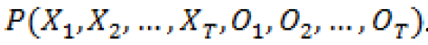

Applying Optical Character Recognition (OCR) for Recognizing Texts Written in
a Specific Persian Font
A thesis submitted to BIHE for the degree of B.S. in the faculty of Computer
Engineering
Submitted by: Vargha Dadvar
Advisor by: Vargha Dadvar
Submission Date: July 2013
Project Advisor: Fares Hedayati
Abstract
Recognition of the text in scanned documents of older Persian writings is a challenging
task, because of the
properties of such scripts and the cursive property of Persian writings in general. As separate segmentation
of Persian characters is much more difficult than in Latin and some other alphabets, using segmentation-free
approaches are more useful in Persian OCR. In this project, one of such methods called the Generalized
Hidden Markov Models (or gHMM) is used for the recognition of texts written in a specific Persian font,
which was mostly used in older Persian documents and books. The gHMM not only helps to combine text line
segmentation and character recognition processes, but also provides a way to take advantage of both the
character image properties and the language model in the service of character recognition. The language
model probabilities and the parameters computed from the training character features are used in the
recognition process, and should be prepared during the training phase. The main recognition program
implemented in this project firstly detects and corrects the skew of the input pages and detects the text
lines. Then in the body of the recognition process, a generalized version of the Viterbi algorithm is used
to recognize simultaneously the best segmentation and the best character sequence corresponding to each text
line. The Modified Quadratic Distance Function (or MQDF) is used in the heart of the Viterbi algorithm in
order to measure the closeness of each character image with each of the character classes. The recognition
accuracy of the implemented OCR program is 85.5%.
1. Introduction
This paper is the final document of my final thesis for the B.S. degree of Computer
Engineering in BIHE. This
project includes a study about different aspects of the Optical Character Recognition problem, and also the
implementation of an OCR system for a specific Persian font used in the printed version of some older
Persian books. In this document, the theoretical foundations and the practical considerations of designing
and implementing the OCR program are explained.
Optical Character Recognition (OCR) is the process of recognizing the text in the scanned
images of the
documents or books. Despite advances in the recognition of Latin writings and texts written in some other
alphabets, research in Persian and Arabic OCR and handwriting recognition still continues. Some background
information about the OCR problem is given in Section 2. As one of the possible applications of Persian OCR,
there are many historical and older Persian books that should be converted to computer-readable text. In
this project, one of the fonts and writing styles used in such older Persian books is chosen, and an OCR
program is implemented for recognizing the texts written in this font. Persian writings are cursive and most
of them include some other complexities, as will be explained in Section 3, and this makes the recognition
of such texts difficult and more complex.
Hidden Markov Models (HMM) is the main mathematical model used in this project for solving
the character
recognition problem, as it is detailed in Section 4. HMM helps to use both the target language properties
and image properties of the characters for the recognition process. A generalized version of HMM also helps
to combine the text line segmentation and the character recognition processes, as this approach is
preferable in Persian OCR.
Before the text line images are used as inputs to the recognition process, some preprocessing should be
performed on the scanned page images, such as skew detection and baseline detection, which will be explained
in Section 5. Section 6 introduces the features which are used in this project to capture the properties of
character images, so that the appearance of the characters can be distinguishable by the OCR program. As the
OCR system should be trained to have the capability of recognizing the characters of a text line image, a
separate training process should be done. In this phase, the language model probabilities and the parameters
needed for predicting the character corresponding to each character image are trained (i.e. prepared) by
analyzing the type-written text version and the scanned images of a training text document. The details are
explained in Section 7.
In Section 8, the concept of distance functions is introduced as a special function which
is used to compute
the level of closeness between each character image and a character class. This function is used in the body
the Viterbi algorithm, which is responsible to find the most probable character sequence for an input text
line image. Also in this section, we will see how the generalized Viterbi algorithm is used in this project
to find the best segmentation of the line and the best character sequence simultaneously. Section 9 includes
a brief explanation about the software technologies used to implement this OCR system. The results of
testing the implemented OCR program are discussed in Section 10, in addition to the explanation of some
tasks done in order to improve the accuracy of the system.
2. Some Background on Optical Character Recognition
Optical Character Recognition (OCR) is an Artificial Intelligence field which aims to
correctly detect and recognize the text sequences in scanned documents and writings. Recognizing the text in
such documents makes these sources of information searchable and manipulable by computers, and prepares them
to be used as input for text processing and many other computer applications. OCR can be used in different
types of applications, including the recognition of handwritten documents, recognition of machine-printed
documents, online recognition of text input in PDAs and smart-phones, recognition of numbers in forms and
car number plates, etc.
OCR technology and software have been developed quickly in recent years, and many
developed OCR solutions
offer very accurate recognition of text with very low error rates. This level of accuracy in OCR technology
has become possible in part because of the advancements in Machine Learning, an area in Artificial
Intelligence which helps to promote methods for learning knowledge and logic from large amounts of data.
Despite these developments in the recognition of texts written in Latin and some other alphabets, OCR
research still continues in certain more specific areas, including recognition of texts in other languages
such as Arabic and Persian scripts, as well as handwriting recognition in different alphabets.
In almost all of the OCR methods and implementations, certain types of tasks should be done sequentially in
the recognition process, including noise removal, document skew detection, baseline detection, character
segmentation, and finally character or text recognition. In some languages, segmenting the text line into
characters is easier because of the detectable space between the characters. However, Arabic and Persian
texts are cursive and therefore automatic character segmentation is a very difficult task in such languages.
As a result, most of the methods proposed
for Arabic and Persian OCR use a holistic approach, meaning that the characters are not separated from each
other before the recognition process, and the recognition is done in word or text block level. A survey and
review of the most important researches in Arabic and Persian OCR and handwritten recognition can be found
in [1] and [2].
Among the methods with holistic approach to character segmentation, those using Hidden
Markov Models are of
great importance. Hidden Markov Models (HMM) make it possible to take advantage of both the language model
and the image properties of characters in order to recognize the text sequences correctly. One approach in
using HMM for OCR is to use a universal model that is composed of smaller interconnected character models,
each of which represents one letter from the alphabet [3]. In another method which is useful for small
vocabularies of words, a separate HMM is used for each word class [4]. Another way to use HMM without a
previous character segmentation phase is to combine the recognition process and the segmentation process.
That is, the final recognition process iterates over all possible segmentation states, and for each of them
computes the best character sequence. In [5] this method is called Generalized Hidden Markov Models (gHMM),
and is successfully used for recognition of Tibetan wood block prints.
In our project, the aforementioned Generalized Hidden Markov Models is used as the main
recognition
methodology in order to recognize the text in some older Persian writings. Because of the learning purposes
of this project, the scope of the target texts and fonts chosen are limited, and we concentrated on a
specific older Persian font for this project. This helps to concentrate on implementing different stages of
the OCR process in this period, rather than spending time on gathering training data for different types of
Persian fonts and writing styles, and addressing the wide range of requirements of these different fonts and
texts.
3. About the Persian Writings and the Target Font Used
3.1. Properties of Persian Scripts
Persian alphabet includes 32 main letters, four more than the main characters of Arabic.
Most properties of Persian and Arabic alphabet are the same. As in Latin alphabet where each character has
two different forms (capital and small), in Persian and Arabic each letter has four different forms based on
the place of a character in the word and the characters before and after it. These forms of a character
include initial form, medial form, final form, and the isolated form. In Table 1, different forms of some
Persian letters are shown. It can be seen that the difference
between some characters are only in the number of dots or other extra strokes they have, and their main body
is almost the same. For example the letters KAAF (ک) and GAAF (گ) only differ in the extra stroke above
GAAF, and the difference between characters TEH (ت) and SEH (ث) is in the number of dots above their main
body. It would be very challenging for the OCR system to distinguish between such similar characters.
Table 1 - Different forms of some of the characters of the
Persian alphabet.
As different forms of characters suggest, Persian writings are cursive, and most of the characters are
connected
to each other within a word. This characteristic imposes a great challenge to text segmentation in Persian
writings. The lack of space between characters is sometimes even more intense so that the two adjacent
characters have vertical overlap with each other. Moreover, some characters are deformed when connected to
each
other which form a ligature, as another complexity in Persian and Arabic scripts. Also in Arabic and
Persian,
sometimes a character is accompanied with diacritics or symbols above or below its body, mainly the vowel
symbols. These diacritics are different from dots or other symbols which are inherent to some characters.
Some
of these complexities in Persian and Arabic scripts are illustrated in Figure 1 below.
Figure 1 - Some of the complexities in the form of characters
in Persian and Arabic writings
3.2. Properties of the Target Font and Text
The font analyzed in this project is a rather old typewritten font used in some older
Persian writings. As an example, this writing style was used in the printed version of a series of holy
Baha’i books called ‘Maede-ye-Asemani’ (مائده ی آسمانی ). Some volumes of this book were used as the main
training and test writings of this project. In addition to the complexities of Persian and Arabic writings
mentioned above, the target Persian font used in this project also has its own properties. Firstly, there is
little regularity in the way spaces are used within and between words in the target text. For example, in
some situations where words are finished with characters like REH (ر) or VAAV (و), there is no space between
the current word and the next word, and sometimes there is overlap between the final character of a word and
the first character of the next word. On the other hand, in some situations an extra space is seen between
the characters of a single word. Figure 2 shows examples of such irregularities in the used document.

Figure 2 - Examples of irregularities in the way spaces are
used in the text used in this project.
In many typewritten Persian texts (mostly the older ones), sometimes the characters are stretched for text
justification purposes, and this leads to some deformation in the appearance of the characters. Also in the
target texts of this project, sometimes at the end of lines one or two characters are translated a little
above the baseline. These complexities are shown in figures below. All these irregularities impose
challenges to the recognition process.

Figure 3 - Examples of character stretch and character
translation in the target text.
3.3. Selection of Character Classes Covered by OCR System
Selection of the character classes to be covered by the OCR system was a difficult task,
mainly because of the irregularities regarding the potential vertical overlaps between adjacent characters.
Firstly, although some forms of the same characters have very similar appearance, we need to regard these
similar forms as separate character classes in the OCR system, mainly because the transition behavior of
various forms of a single character are different (Refer to Section 4 about the definition of transition
model). For example, final form of the letter NOON (ن) always joins a middle or initial form of a character,
while the isolated form of NOON (always follows an isolated or final character in a word. In addition to
different forms of the main characters, some other characters and symbols were also chosen to be included in
the list of character classes, mainly based on their frequency in the target texts. Arabic digits from 0 to
9, some symbols like colon and parentheses, and some other Arabic characters like HAMZEH (ء) and
TEH_MARBUTEH (ة) are among such characters.
As mentioned above, characters which have vertical overlaps when connected to each other
can be sources of
error in the recognition process. The reason is that during the recognition process, in such cases finding
the best segmentation point is very difficult for the algorithm, and thus overlapping characters may not be
segmented and thus recognized correctly. Therefore, it may be a good practice to also include some
combinations of characters in the list of character classes, especially those combinations representing
overlapping characters. This decision can help the software to recognize combinations of characters where
the single characters are tightly connected and are vertically overlapping each other. In addition, some
characters like ALEPH (ا) are
so small in width that it may be better to consider their combinations with some other characters as new
character classes. However, using combinatorial character classes has its own problems and limitations.
Firstly, hundreds or thousands of such combinations are present in Persian scripts like the writings used in
this project, and it is not feasible to include all these combinations as separate character classes.
Moreover, the overlapping characters problem is not just limited to two-character combinations. For example,
a sub-word like “ ورا ” in our target texts involves vertical overlaps between VAAV (و) and REH (ر) and
between REH (and ALEPH (ا). Because of these considerations, we decided to only include some more frequent
combinatorial character classes in which the characters were tightly connected or were overlapping each
other a lot.
On the whole, about 320 number of character classes were selected to be covered by the
implemented OCR
software in initial tests. In order to increase the accuracy and stability of the program, some of the
character classes without a least number of training examples were eliminated in the final tests of the
project.
4. The Main Recognition Approach
In this section, the main recognition methodology used in the project is explained, as well
as
the related theoretical foundations. As mentioned previously in this document, Hidden Markov Model (HMM) is
the
main mathematical tool used to solve the OCR problem in this project. In a probabilistic problem modeled by
HMM,
there are some random variables which are sequentially dependent on each other, as Figure 4 shows. This
means
that each of these variables is only dependent on its previous adjacent variable. The values of these random
variables are unknown and therefore these variables are called hidden state variables. Hidden variables can
have
one of the possible discrete values or states , , …, . The probability is the probability that the hidden
variable has value and its previous adjacent variable has value . Such a probability is called the
Transition
Probability. Also there is another class of random variables , each of which corresponding to one hidden
variable, whose values are known and can be either discrete or continuous. They are called observation
variables
(shown in the lower part of Figure 4). The probability is the probability that the observation corresponds
to
the value of the hidden state . In the terminology of HMMs, this type of probability is called the Emission
Probability.
Figure 4 - A diagram showing the dependency relations between
variables in a Hidden Markov Model.
According to the probability theory, if the values of all observation variables and all
possible transition and emission probabilities are known, then the joint probability of occurrence of each
possible sequence of values for hidden state variables can be computed as follows:

It is obvious that only the first hidden variable does not have any adjacent variable to
its
left. Therefore, instead of a transition probability from its previous variable, its own probability is
multiplied in the formula. This probability is called the Initial Probability and is only computed for the
initial hidden variable.
Now the same method can be used to model the character recognition problem. If a text line
image is segmented
into number of character images, then the observations are these character images. The actual character
classes
corresponding to each of these observations are unknown, and thus the guesses about the identities of these
observations are the hidden variables of the model. Transition probability is the probability of the
adjacency
of two characters. Therefore, if we have number of character classes, an x matrix can hold all the
transition
probabilities between characters. The details of computing language model probabilities are explained in
Section
7. Emission probability is the probability that an observation (i.e. a segment of the line image)
corresponds to
a specific character class. It is a measure for the level of similarity between the image and the character
class. As we will see in Section 8, a function similar to a Gaussian distribution is used to compute the
emission probabilities for different segments of a line and for different character classes. The initial
probabilities are also computed by counting the number of occurrences of each character in the language
model.
When all these probabilities are available, the probability that a set of character images corresponds to a
set
of character classes can be computed using the formula
above for all possible sequences of characters. Therefore, it is possible to find the best sequence of
characters which maximizes the probability  This process of finding the best
character sequence for a line is
performed in an algorithm called Viterbi. In this way, the Hidden Markov Models enable us to combine
computer
vision techniques (emission probabilities) and language model (transition and initial probabilities) in
order to
solve the character recognition problem.
As mentioned in previous section, in Persian OCR it may be better to combine the text line
segmentation
process
and the character recognition process. Therefore, we use a modified version of HMM called Generalized Hidden
Markov Models (gHMM). The main difference from the classic HMM is that the generalized Viterbi algorithm not
only iterates over different combinations of characters to find the character sequence with maximum
probability,
but it also examines different possible segmentation states in order to find the best segmentation scheme.
In
better words, for each segmentation state, the best character sequence is computed using classic HMM, and
the
best character sequences of different segmentation states are compared. The details of implementing this
method
are explained in Section 8.
5. Preprocessing on the Scanned Documents
As mentioned in previous section, the images of the text lines of the target document are
the inputs of the recognition process. However, the very first input of OCR software is the images of target
document pages. These page images mostly have different types of noises, and sometimes they are skewed.
These problems can affect the accuracy of the recognition process and should be addressed. Moreover, images
of the text lines should be detected and extracted from the whole page. In this section, the details of the
methods used in this project for these types of preprocessing are discussed.
5.1. Noise Removal
Most of the scanned documents, especially older documents and books, include different
types of noises. The most prevalent type of noises in document images is the extra black or gray pixels in
white background of the pages, or lighter pixels in the black body of the characters. This type of noises is
sometimes called salt-and-pepper noises. In the target text used in this project, the presence of
salt-and-pepper noises is very little. Most of the noises in this text are located around or on the body of
the characters, as some of them are shown in Figure 5 below.